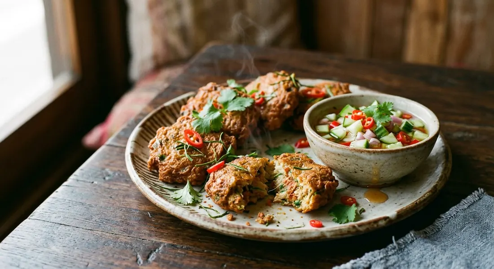

Grey featherback fish kneaded with red curry paste, kaffir lime leaves and yardlong beans, shaped flat and fried until the cakes bounce — the starter Thai restaurants run out of first.

ทอด means fried; มัน is the word for anything rich, luscious and pleasing — fried rice is ข้าวมัน, and these cakes are fried pleasure by name. But the real subject of the dish is the fish. ปลากราย, the grey featherback, is a bony freshwater fish no one bothers to fillet — it is scraped off the skeleton with a spoon, and its flesh has one famous property: the more you work it, the springier it gets. Mahidol University's recipe notes the same fish goes into Thai fish balls, and its elasticity is the entire point.
Everything in the Thai sources is about protecting that spring. Mahidol kneads the fish with salted water over an ice bath until it turns glossy and translucent — "then it's ready" — and holds the shaped cakes on ice until they hit the oil. Phol Food Mafia's chef pounds the fish in a mortar with the curry paste, the same motion by stages. And Cookpad's home cook slaps the finished paste down into the bowl — one sharp ฝาด — which she says makes the cakes puff when fried and turn chewy-tender instead of stiff.
The seasonings are few and all aromatic: red curry paste, fish sauce, a little sugar, julienned kaffir lime leaf and sliced yardlong bean. The kaffir lime does double duty, cutting the fishiness the way Mahidol says. Fried holy basil leaves often land on the plate beside the cakes — the TrueID recipe fries a handful in the same oil.
| Thai | English | Amount |
|---|---|---|
| เนื้อปลากรายขูด | Grey featherback fish, scraped or finely minced | 500 g |
| พริกแกงเผ็ด | Red curry paste | 100 g |
| ไข่ไก่ (ใส่หรือไม่ใส่ก็ได้) | Eggs — optional | 1–2 |
| ถั่วฝักยาว / ถั่วพู | Yardlong beans or wing beans, finely sliced | 200 g |
| ใบมะกรูด | Kaffir lime leaves, julienned | 5 |
| น้ำปลา | Fish sauce | 2 tsp |
| น้ำตาลทราย | Sugar | 2 tsp |
| น้ำมันพืช | Vegetable oil, for deep-frying | as needed |
| น้ำจิ้มอาจาด / น้ำจิ้มไก่ | Cucumber ajad or sweet chilli sauce, to serve | — |
The no-egg pot (TrueID): identical fish and paste, but no egg at all — "pure fish and curry paste flavour" — relying entirely on a ten-minute knead for the bounce. The vendor pot (Wongnai): two eggs in 500 g of fish, cakes pressed to a strict 0.5 cm, fried at medium heat and sold with sweet chilli sauce. The from-scratch pot (Cookpad): a fully homemade paste of dried chillies, galangal, lemongrass, fingerroot, kapi roasted in banana leaf and holy basil flower, with wing beans and holy basil leaves in the mix, two eggs, and palm sugar for the seasoning. The chef pot (Phol Food Mafia): 250 g fish, 60 g paste, one egg — everything pounded in a mortar, fried at 160°C with a dent pressed into each cake.
The egg. Wongnai uses two, Cookpad two, Mahidol and Phol Food Mafia one, and TrueID pointedly none — its whole pitch is "springy without egg, pure fish and paste". Egg makes the cakes softer and fluffier; no egg makes them denser and more emphatically fish.
The bean. Yardlong bean (ถั่วฝักยาว) in Aroifin, TrueID, Wongnai and Phol Food Mafia; wing bean (ถั่วพู) in Mahidol and Cookpad — the older, more traditional choice, crunchier and greener. Both are sliced so thin they read as green flecks in the brick-red paste.
Knead, pound or slap. Aroifin and TrueID knead by hand for ten minutes with a sweep-and-pull motion; Mahidol kneads with salted water for up to half an hour over ice; Phol Food Mafia pounds everything in a mortar; Cookpad kneads, then throws the mass down into the bowl to aerate it. All four paths lead to the same place: protein that holds together and springs back.
The dip. Aroifin and Mahidol serve the classic cucumber ajad — vinegar, sugar and salt simmered with pounded chilli and garlic, cucumber and peanuts stirred in at the end. Wongnai and Phol Food Mafia reach for sweet chilli sauce (น้ำจิ้มไก่). TrueID, confident in its paste, claims the cakes are good enough to need no dip at all.
The paste. Ready-made red curry paste in most sources, but Cookpad builds it from scratch — dried chillies, galangal, lemongrass, shallot, garlic, kaffir zest, fingerroot, coriander root, salt and kapi (roasted in a banana leaf "or not, if you can't be bothered"). The dish tolerates both; the fish does the work either way.
This recipe is translated from the following Thai-language sources. Where they disagree, we've said so.
1. Aroifin — "วิธีทำ ทอดมันปลากราย หอมพริกแกง เนื้อปลาเด้ง ไม่อมน้ำมัน!" (the recipe used here: 10-minute knead, float-and-flip fry, hot-finish oil trick, ajad) — aroifin.com
2. TrueID Food — "แจกสูตร ทอดมันปลากราย พร้อมเคล็ดลับนวดให้เนื้อเด้งสู้ฟัน" (the no-egg version; fried holy basil on the side) — food.trueid.net
3. Mahidol University Institute of Nutrition — "ทอดมันปลากราย" (the salt-water knead over ice, the 30-minute gloss test, the brown-not-red colour check, ajad) — inmu.mahidol.ac.th
4. Wongnai Cooking — "ทอดมันปลากราย เมนูทอด เนื้อปลาแน่น ๆ" (the two-egg vendor version, 0.5 cm cakes, sweet chilli) — wongnai.com
5. Cookpad — "ทอดมันปลากราย" by janny_jenni (the from-scratch paste, wing beans, the slap technique) — cookpad.com/th
6. Phol Food Mafia — "Thai Fish Cake (ทอดมันปลากราย)" by Chef Thanakorn Ployseechomphu (the mortar-pounded version, 160°C, the dent) — pholfoodmafia.com